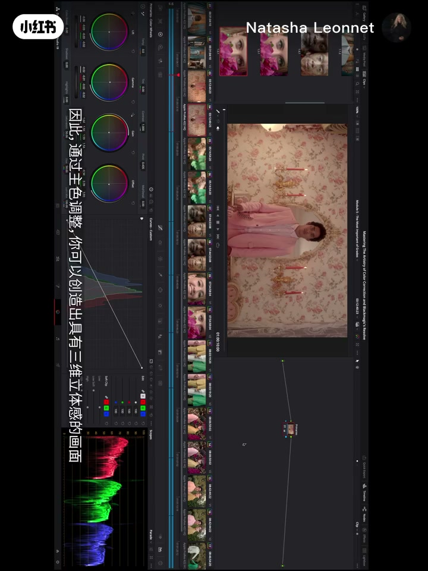
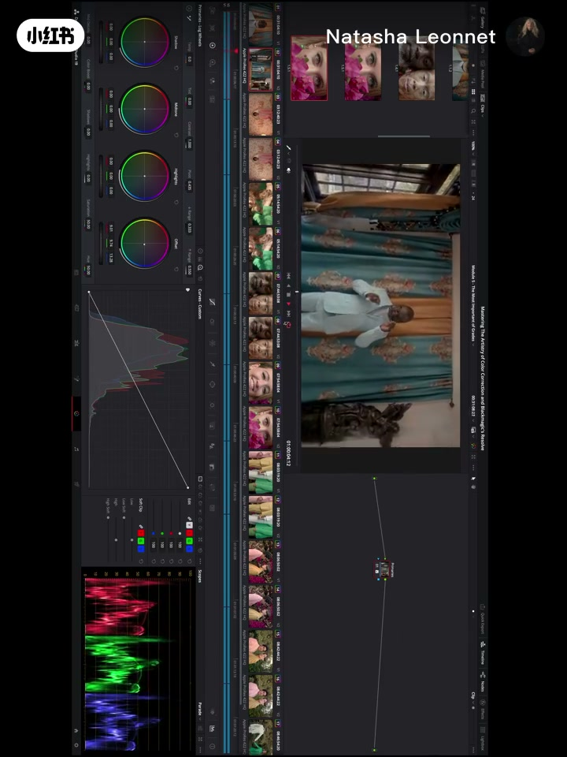
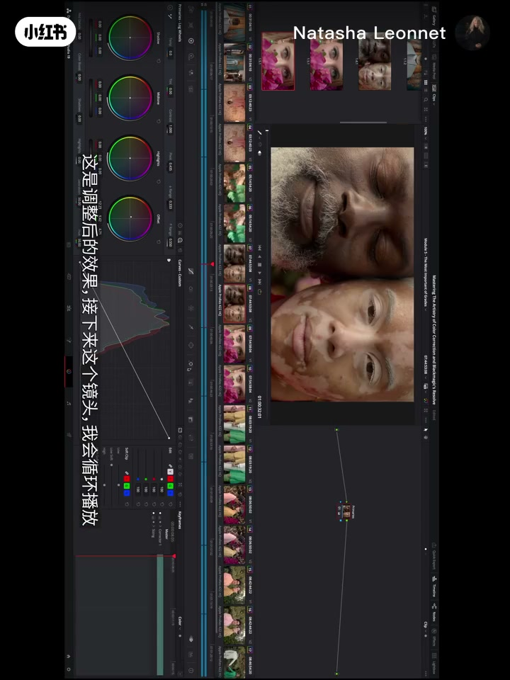
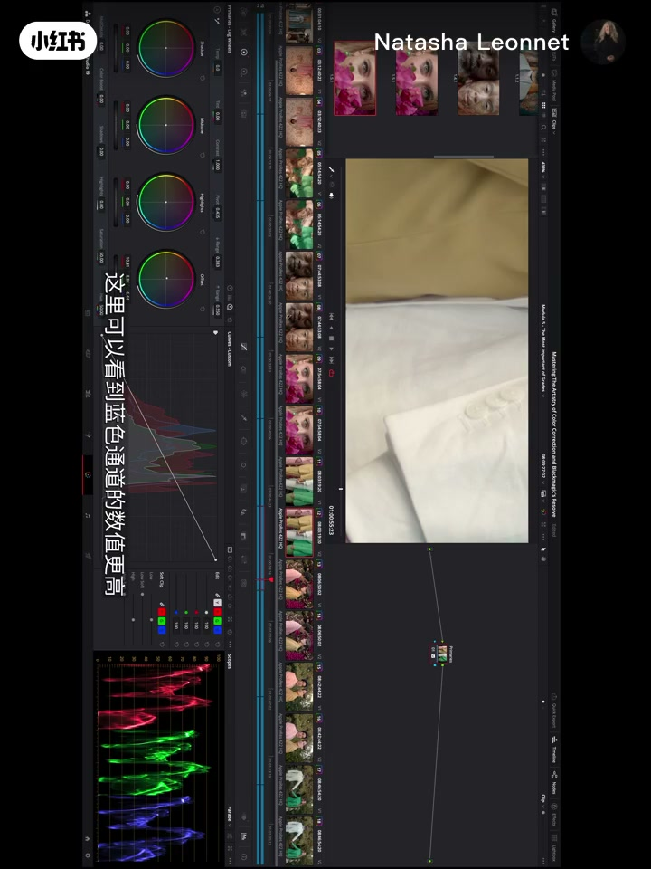
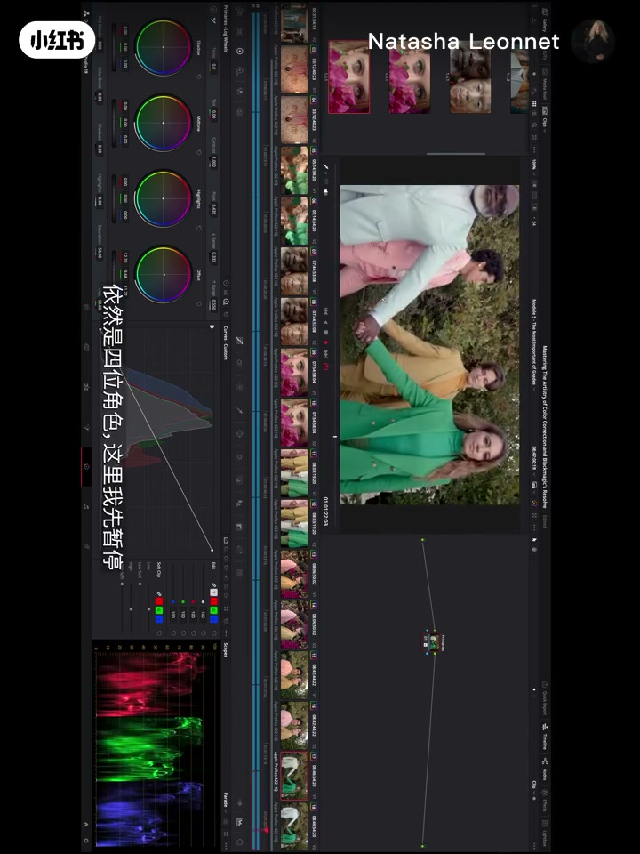

内容要点
《爱乐之城》调色师 Natasha Leonnet 的达芬奇调色系列教程开场课。核心判断：所有优秀调色的秘密都在一级校色（primaries）——它就是胶片时代实验室配光师手里那套控制的对等物。教程先讲为什么 primaries 是建立色彩分离、肤色平衡和全片基调的起点，再拆解达芬奇里 Offset 与线性一级校色两种工作方式，最后用同一批素材分别做冷暖两套设置，展示仅靠 primaries 就能彻底改变画面的情绪与肤色调。
知识结构
回答小红薯的跟练请求，承诺演示完整调色过程；指出 primaries 是实现最佳色彩分离和肤色平衡的地方。
一级校色决定高光、中间调、暗部各自要什么颜色、对比曲线长什么样、阴影高光保留多少细节；脏乱浑浊的调色多半错在一级校色。
胶片实验室配光师用有限的控制做出一流作品；达芬奇一级校色就是那套 lab 控制的复刻，值得用同样的标准要求自己。
Offset 与线性一级校色同在一页；有人只用线性，有人两者结合；后续模块会讲 log wheels 等更复杂的一级校色。
DIT 在片场用 primaries 建立参考，dailies 调色师延续它确定全片基调，编辑团队会与这个初版基调长期共处。
用提供的素材做两套设置：暖调与冷调，观察胡子、衬衫、肤色、牙齿颜色的变化，全部只靠 primaries 完成。
用 Parade 波形检查 RGB 通道平衡确认白平衡；近处有绿色植被时，皮肤被环境色反射干扰最难处理。
primaries 影响全图不是局部；为了人物对比度压暗阴影会丢失细节（crushing the shadows）；两套成品均出自 Offset+线性一级校色。
一级校色是达芬奇调色的地基：先在 primaries 里定好高光/中间调/暗部的颜色、对比曲线与细节取舍，建立全片基调；Offset 复刻胶片配光、线性一级校色适合快速工作，二者可单独也可组合。判断一张图是否干净，先看色彩分离和肤色是否平衡，Parade 波形是检查白平衡的可靠工具。
00:00-00:18开场：为什么一切从一级校色开始
视频以一条小红薯的提问开场：「能否做一个跟练教程？我是完全新手，想看看你完整的工作过程。」调色师 Natasha 直接答应，并用这个系列的第一课回答一个更根本的问题——调色的起点是什么。
她的回答非常明确：一切从 primaries（一级校色）开始。一句话点明其地位：「一级校色是你实现最佳色彩分离的地方，是你得到最平衡肤色的地方，也是你建立整张调色板的地方——高光、中间调、暗部各要什么颜色，对比曲线长什么样，暗部和亮部保留多少细节。」

00:18-01:36为什么优秀调色师都靠 primaries，以及最常见的错误
Natasha 给出一个有些反直觉的判断：调色师之间的差别，不在花哨的节点堆叠，而在最基础的一级校色。「如果你去问任何一位伟大的调色师，他们都会告诉你，一切从 primaries 开始。」
她还分享了调色圈对失败作品的共识形容词：dirty（脏）和 muddy（浑浊）。这两种观感几乎都是 primaries 阶段犯的错——所有东西不自觉地混在一起，中间调像是贴在亮部与暗部之间，整幅画面蒙上一层没有意图的暗沉光泽。

01:36-02:19历史参照：胶片实验室配光师的有限控制
为了让 primaries 的价值更直观，Natasha 把视线拉回胶片时代：实验室里的配光师（lab timers）手头的控制非常有限，却做出了至今仍被仰望的色彩。「他们用 primaries 配合实验室化学工艺完成了全部工作。」
这成为她的工作信条——「我努力让自己的作品达到那些配光师用『有限控制』创造的标准，每天回想他们创造的美，激励我用 primaries 去模仿那种美。」

02:19-03:08Offset 与线性一级校色：两种工作方式
这一节进入实际操作层面。达芬奇在 primaries 面板里复刻了实验室的配光控制——这就是 Offset（偏移）工具。「我们还会讲到线性一级校色，它们在同一页面上。」
两种方式可以分开使用也可以组合：「有人只用线性 primaries 就做出非常漂亮的作品，有人把 Offset 和线性结合使用。我个人是这样工作的，两种方法我都会演示。」她还预告了后续模块：log wheels 会作为另一层 primaries，用来精修高光与阴影、给它们做平衡或加入特定色染。

03:08-04:27行业坐标：DIT 与 dailies 调色师如何用 primaries 定基调
Natasha 补上了调色师之外的一环：片场上的 DIT 会用达芬奇建立参考，交给 dailies（每日样片）调色师；后者再用 primaries 确定整部影片的建立基调（establishing look），这个基调会被剪辑团队长期参照——「在剪辑阶段，他们可能要跟它相处一年甚至更久。」
她强调：「primaries 在建立那个大家都会适应的第一印象上如此重要，它将成为最终调色的地基。这不意味着最终调色师必须沿用这些设置，但它会成为'这部电影最终应该看起来怎样'的讨论起点。」这也解释了为什么她会说 DIT 和 dailies 调色师是后期最重要的角色之一——无论长片还是剧集都是如此。

04:27-07:30实操：同一批素材，两套冷暖设置
课程最后，Natasha 展示手头练习素材：她用 primaries 做了两套不同设置，直观展示一级校色对画面情绪与肤色的控制力。第一个镜头里，男士的胡子偏中性、衬衫偏冷——色彩分离清晰可见；另一个时间线里则更冷，胡子带一点黄、皮肤略泛红润。
她逐镜头对比：一张壁纸前的人像被做成偏暖与偏冷两版，肤色和墙面氛围都随之改变；柔光一版保留亮部全部细节、不做强对比，暖调一版则整体更黄；还有一组把肤色从偏暖调到更冷、更多品红的版本——连牙齿上的色感都能看出差别。每一组都强调：这全部只用 primaries 完成。

07:30-09:30Parade 波形与绿色环境：两个实战检查点
当镜头里出现大面积白色时，Natasha 切到 Parade（分量）波形——它展示构成光的红、绿、蓝三个通道的平衡。「蓝通道更高，白色就偏蓝；蓝通道更低，白色就偏黄。」这是用工具验证白平衡的直观示范。
她还点出一个外景难题：人物站在草地、树木旁时，环境绿光会反射进肤色。「要拿掉足够多的绿、又不显得做作，是条很细的线——通常你感觉'哪里不对'时，往往就是绿色去过头了。」暖色方案与冷色方案在人物发色、肤色上的差异也因此被放大。

09:30-10:42边界提醒：primaries 是全图工具，压暗阴影要有取舍
Natasha 特别提醒一级校色的作用范围：它不是局部的。「primaries 会影响整幅画面，它不针对某个区域，不针对某个亮度、饱和度或色相。」
演示中她为了让中间人物获得足够对比度，把阴影压得很暗——画面下方的暗部细节消失了，行话叫 crushing the shadows（压碎阴影）。「一般我不会这样工作，但这次为了突出人物，这是给对比度最好的办法。」最后一组四人镜头里，暖版更亮更暖（外套颜色尤其明显），冷版更克制，两套设置同样由 Offset 与线性一级校色共同完成。


完整转录（32段）
以下文本由 Whisper medium 模型自动转录，可能存在少量识别误差，已尽可能修正。
Hi everyone on Red Note, so we have this question, could you make a short follow along tutorial? I am a complete beginner, and I would like to see exactly how you work through the process. Absolutely. Please see the following follow along tutorial. Thank you.
Your primaries are where you are going to achieve the best color separation, where you're going to get the most balanced skin tone, where you're going to basically be able to create your palette of what colors do you want in your highlights, your midtones, your lowlights, what does your contrast curve look like, and how much detail do you want to retain in your lowlights and your highlights.
It is the secret to all of the best color corrections. If you talk to any of the great colorists out there, they will tell you that it all starts with their primaries. And in fact, if you really talk to them and ask them what type of color corrections do they not like, they will talk about dirty and muddy color corrections. Those will be the adjectives that they will use, because those are the mistakes that can happen in the primaries, where all of a sudden, everything is going to be the same.
Everything just kind of feels like it's blending together and not in an intentional way, and the midtones will kind of feel like they're just sort of sitting and blending with your highlights and your lowlights and everything is just going to feel slightly like there is an unintentional patina over everything.
In your primaries, you have the ability to create a three-dimensional pop that's absolutely beautiful, and I always try to remember that the lab timers who did such beautiful work at the laboratory, they had the same controls available to them as the primaries, and they did all of their work using their primaries in conjunction with the laboratory chemistry.
And so I really try to create work that I feel like is at the standard that they created with those quote unquote limited controls, and I just try to remember the beauty that they created every single day in order to inspire me to try to mimic that beauty using my primaries.
So for this particular module, we're going to get into resolve's replication of the controls that they had at the laboratory, hence the offset.We are also going to get into the linear primaries, which are here on the exact same page of the primaries palette.
Some people just use their linear primaries, and they do the most beautiful work doing so, and some people use their offset in conjunction with their linear primaries.Personally, that's how I work, and I will be showing you both methods.
In a later module, we'll get into our more complex primaries, and specifically we'll get into the ability to work in our log wheels, which is another aspect of trying to use another layer of primaries to refine basically our highlights and our shadows, and to either balance them or to put certain washes of color into them.
So I'll be showing you how to do that as well.Just know that the primaries are what are used by the DIT on set when they are trying to establish a look.
They will often create references on set using the resolve, for instance, that they will then send over to the dailies colorist, who will then be working with primaries again in order to create the establishing look for the film and the look that everyone in editorial is going to be living with for up to like a year, even more than a year when they're in editorial.
And so the primaries are so important in terms of establishing that first look that everybody is going to acclimate to, and that will be basically the foundation of what the final color correction will look like.It doesn't mean that the final colorist will use those settings, but it will become the point of conversation as to how the film should look ultimately in the end.
So I cannot stress, first of all, how important these tools are, and also just the importance of the role of the DIT and the dailies colorist in terms of starting to create the look of the final work.
And this refers to both features and episodic, because dailies applies to both, and these are some of the most important roles, I would say, in post-production, at least in my experience.
So before we end this particular lesson, I just wanted to go over the material that I currently have at my disposal, which we will be providing for you as well to practice with.
And using this material, I created two different settings using my primaries to show you just how I can change the hue of the material and hence the emotional impact of the material.
So if we just go to this first shot, I'm just going to loop it.
And you can see that this shot has a lot of color separation, and if you look at the gentleman's beard here, you can see that it's pretty neutral, it's got a tiny bit of warmth in it, and his shirt feels quite cold.
If I go to my other timeline here, you can see that it's just a little different.I'm going to zoom in here.It's even colder.So you can see there's a touch of yellow in the beard, and here you can see that it's just a little bit whiter here.
And I did this using my primaries.You can also see that in the whiter one, his skin tone's a little rosier, and in this particular one that has a little bit of yellow in the beard, there's also a patina of gold over the whole image here.
In this particular shot, I'm just going to loop this.I tried a warmer and a slightly cooler look, just to see how it basically affected the skin tone, but also the wallpaper.So let's go to the last frame here.This was the cooler look, and that's the warmer look.
So you can see just how dramatically I can change this material with just my primaries in terms of the feeling of the material.If we go to this particular shot here, I'm going to just play it.
So I went for a very soft look here, where I wanted to feel all the detail in the highlights, and I didn't want it to feel too contrasty.And if we look at the other look, it was much, much warmer.I went for something that felt much more yellowy, and then this, which was a little bit cooler and more neutral, and as a result, I got a little bit more magenta in the skin tone.
If we look at this particular shot, with these two differences in skin tones here, so this was one look.And then if I go to here, you can see, if you look at the skin tone right there at the bridge of the nose, one is a little bit warmer, and then one's just a little bit cooler.And again, I did that just using my primaries.That's the before, and that's the after.
For the next shot here, I'm just going to loop this.So I tried one that was a slightly warmer skin tone, and one that was a cooler skin tone, and hence embraced magenta more.So let's just get to this last frame here.So that's the more magenta, and that's the warmer skin tone.You can see how different it is on her teeth, for instance.You can feel more yellow there.Here you can feel more magenta right here.So again, that was just an overall color correction that has the ability to
change her skin tone.If we go to this particular shot that has a lot of color separation just by virtue of the differences in costumes, and maybe we go to this frame here, this was one look.Let's zoom in where we look at the white here.And this is another look which just has a cooler white.I'm just going to go into my parade mode, which shows me the balance between the red, green, and blue channels that make up light.And here, if I look at the blue channel,
I can see that the blue channel is higher, and here you can see that it's lower, and hence there's more yellow in the white right here.Okay, I'm going to zoom out.Let's go to the next shot.So once again, I tried a colder and a warmer situation.It's always a challenge when you have material that was shot outside with skin tones next to green, because whatever is near the skin tone is going to reflect into the skin tone.So it's always a delicate balance when you have characters that are near grass, for instance,
or a tree, or a bush, to get enough of the green out without it feeling artificial, because it's a fine line, because generally you get the sense that something's not quite right, and you've overcompensated for trying to get that green out.This is the before with a much warmer option.This is the after.You can see how much colder the hair is in this particular case when I went for the colder option.And I just wanted to show you two different scenarios.Okay, let's go to this particular shot here.
Again, a challenge because of all the greenery around the characters.Let's go right here and look at the two characters in the middle of the frame.So that was the much, much warmer one.You can really see that if you look at these highlights up here, you can see those tinges of yellow, and then here you can see that it's much cooler, and you can see how that affects the skin tone.That's the before, and that's the after.And primaries are going to affect your entire image.They're not specific to a certain area.They're not specific to a particular area.
They're not specific to a certain luminance value, saturation value, or hue.They are going to affect every single part of your image.And you can see if you look right down here in the shadows that there isn't any detail in those shadows.I've added so much contrast that I'm eliminating the detail in the shadows.Generally, I try not to work that way, but in this particular case, as I was focusing on the characters, it was the way in which I could best
add enough contrast on them.So just to show you, that's the warmer and that's the cooler, and both have that property of having lost detail in the shadows, which is called crushing the shadows.For the last shot here, let me just play this.
So we have the four characters again.I'm going to stop right here.That was the warmer one.That's the cooler and also brighter, warmer, especially if you look at the jacket here.And then the cooler one right here.You can see that also if you look in these highlights right here.That's the warmer and that's the cooler.All of these settings here in this timeline were created using both the offset and the linear primaries.